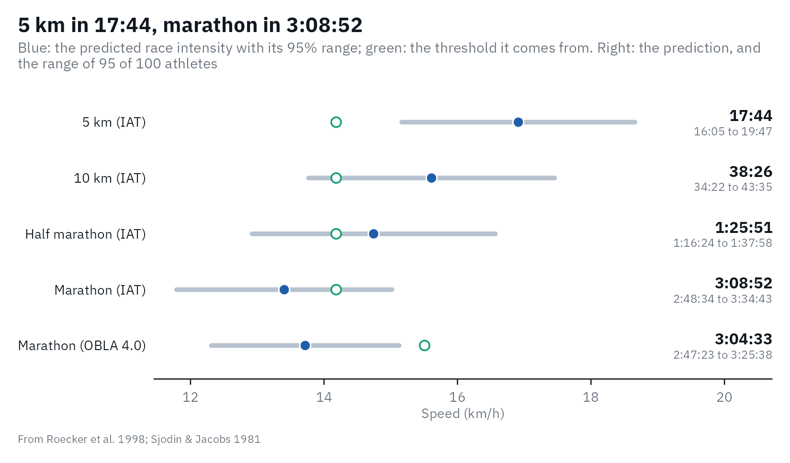
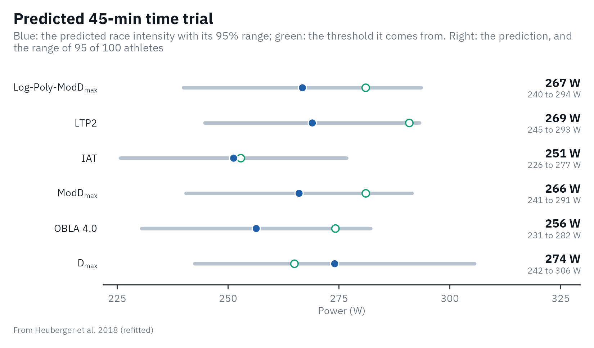
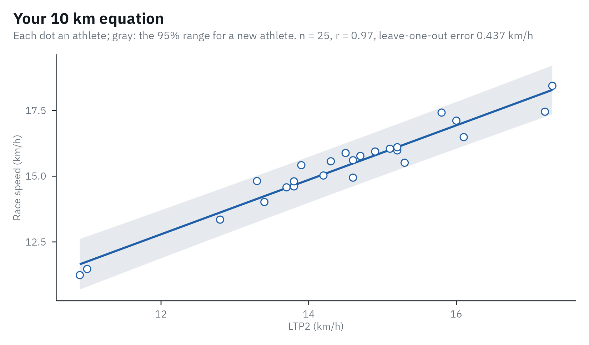

Coaches and athletes want to know what a step test means for the next race. Lactate thresholds are among the strongest laboratory predictors of endurance performance, but a prediction for one athlete is less precise than the correlations suggest. This article shows what lactater can predict, how sure the prediction is, and why the best equation is the one you fit on your own athletes.
The short version:
- A step test predicts race speed to about +/- 10% in running (95% range) and time-trial power to about +/- 25 W in cycling, and only for tests run like those of the study the equation comes from.
- Every equation belongs to one threshold method: an equation fitted on IAT gives wrong numbers for LTP2.
- A recent race predicts the next one better than any step test (Vickers & Vertosick, 2016).
Running: 5 km to the marathon
The largest study of race prediction from a step test followed 427
competitive runners (88 women) who raced within 2 months of a treadmill
test: 3-min stages, +2 km/h, a 2% grade, earlobe blood (Roecker et al.,
1998). The speed at the individual anaerobic threshold (IAT: the
lowest lactate/speed ratio + 1.5 mmol/L, lactater’s IAT)
correlated with mean race speed with r = 0.88 to 0.93, and each distance
got its own straight line. A smaller study of 18 male marathon runners
related marathon speed to the speed at 4 mmol/L (Sjödin & Jacobs,
1981).
Here is a simulated runner tested with that protocol:
library(lactater)
library(dplyr)
runner <- tibble(
intensity = c(0, 8, 10, 12, 14, 16, 18),
lactate = c(1.0, 1.1, 1.2, 1.6, 2.6, 4.6, 8.0)
)
results <- lactate_threshold(runner, intensity, lactate, sport = "running", plot = FALSE)
prediction <- predict_performance(results)
prediction
#> # Predicted performance: running, with 95% prediction ranges
#> # LT2: Log-Poly-ModDmax has no equation here; these come from
#> # IAT and OBLA 4.0
#> # Roecker et al. 1998: 427 competitive runners (88 women); treadmill at 2%
#> # grade, 3-min stages, +2 km/h, earlobe hemolyzed whole blood; best race
#> # within 2 months of the test
#> # Sjodin & Jacobs 1981: 18 male marathon runners; treadmill, 4-min stages, +1
#> # to 2 km/h, fingertip blood; marathon 2 to 3 weeks after the test
#> event method threshold time time_low time_high intensity intensity_low
#> <chr> <chr> <dbl> <chr> <chr> <chr> <dbl> <dbl>
#> 1 5 km IAT 14.2 17:44 16:05 19:47 16.9 15.2
#> 2 10 km IAT 14.2 38:26 34:22 43:35 15.6 13.8
#> 3 Half marath… IAT 14.2 1:25… 1:16:24 1:37:58 14.7 12.9
#> 4 Marathon IAT 14.2 3:08… 2:48:34 3:34:43 13.4 11.8
#> 5 Marathon OBLA … 15.5 3:04… 2:47:23 3:25:38 13.7 12.3
#> # ℹ 3 more variables: intensity_high <dbl>, extrapolated <lgl>, source <chr>
autoplot(prediction)
Each row gives the race time and the predicted mean race speed
(intensity), each with its 95% range. The header repeats
the protocol of each source study, so you can check that your test
matches it.
Read the ranges before the times. Roecker et al. did not report the
error of their equations, so lactater derives it from their tables: the
SD of race speed times sqrt(1 - r^2), about 5 to 6% of race
speed, which makes a 95% range of about +/- 10%. A predicted 3:09
marathon is anything from about 2:49 to 3:35. Two more details matter:
the equations predict the best race of the 2 months after the
test (the authors kept the best result), and men and women were
pooled.
The two marathon estimates come from different thresholds and different studies, and they agree within a few minutes here. That will not always be so; when they differ, the difference is part of the uncertainty.
When the test was run differently
The runner in lactate_tests was tested on a treadmill at
0% grade, with +1 km/h steps after 16 km/h:
tcd_results <- lactate_tests |>
filter(test == "running") |>
lactate_threshold(intensity, lactate, heart_rate, sport = "running", plot = FALSE)
tcd_prediction <- predict_performance(tcd_results, method = "IAT")
#> Warning: The steps of this test (+1 km/h) differ from those of Roecker et al.
#> 1998 (+2 km/h): the thresholds, and so the prediction, may shift.
#> Warning: IAT (20.4 km/h) is outside the range of Roecker et al. 1998 (10.0 to
#> 20.0 km/h): the prediction is an extrapolation.
tcd_prediction |>
select(event, threshold, intensity, time)
#> Warning: Unknown or uninitialised column: `method`.
#> Warning: Unknown or uninitialised column: `method`.
#> # Predicted performance: running, with 95% prediction ranges
#> # LT2: Log-Poly-ModDmax has no equation here; these come from
#> # Roecker et al. 1998: 427 competitive runners (88 women); treadmill at 2%
#> # grade, 3-min stages, +2 km/h, earlobe hemolyzed whole blood; best race
#> # within 2 months of the test
#> event threshold intensity time
#> <chr> <dbl> <dbl> <chr>
#> 1 5 km 20.4 23.4 12:50
#> 2 10 km 20.4 22.2 27:02
#> 3 Half marathon 20.4 22.4 56:23
#> 4 Marathon 20.4 20.3 2:04:45A marathon in about 2:05 is close to the world record, for a runner described as trained. lactater warns twice: the steps differ from the source protocol, and the IAT (20.4 km/h) lies above the runners Roecker et al. studied (about 10 to 20 km/h). Both matter:
- The protocol moves the threshold. Running on the flat costs less than at a 2% grade, so the same lactate appears at a higher speed. Smaller steps also move it: 1 instead of 2 km/h raised the speed at an individual anaerobic threshold by 6% (Coen et al., 2001), and 6- instead of 3-min stages lowered the speed at 4 mmol/L from 14.4 to 12.9 km/h (Kuipers et al., 2003).
- Outside the sample, a straight line is a guess. At an IAT this high, the half-marathon equation even predicts a faster speed than the 10 km one.
lactater can read the steps from the data, but not the stage duration, the treadmill grade or the blood sample: compare them with the protocol in the header yourself.
Cycling: the 45-min time trial
For cycling, lactater fits its own equations on the open data of Heuberger et
al. (2018): 48 well-trained men, 5-min stages of +25 W from 175 W,
venous blood, and a 45-min time trial a week after the test
(data-raw/performance_cycling.R). Because the thresholds
come from lactater itself, any of six methods can be used:
cyclist_results <- lactate_tests |>
filter(test == "cycling_5min_no_rest") |>
lactate_threshold(intensity, lactate, plot = FALSE)
cyclist_prediction <- predict_performance(cyclist_results)
cyclist_prediction
#> # Predicted performance: cycling, with 95% prediction ranges
#> # LT2: Log-Poly-ModDmax, shown first; the others
#> # are for comparison
#> # Heuberger et al. 2018 (refitted): 48 well-trained male cyclists; 5-min
#> # stages, +25 W from 175 W, venous blood (Lactate Pro 2); 45-min time trial a
#> # week after the test
#> event method threshold intensity intensity_low intensity_high extrapolated
#> <chr> <chr> <dbl> <dbl> <dbl> <dbl> <lgl>
#> 1 45-min t… Log-P… 281 267 240 294 FALSE
#> 2 45-min t… LTP2 291 269 245 293 FALSE
#> 3 45-min t… IAT 253 251 226 276 FALSE
#> 4 45-min t… ModDm… 281 266 241 291 FALSE
#> 5 45-min t… OBLA … 274 256 230 282 FALSE
#> 6 45-min t… Dmax 265 274 242 306 FALSE
#> # ℹ 1 more variable: source <chr>
autoplot(cyclist_prediction)
This rider is one of the 48, so his prediction is not a fair test of the equations. On the whole sample, the leave-one-out prediction errors (each rider predicted by the equation fitted without him) were:
| Predictor | Riders | r | Leave-one-out error | Time-trial power, % of the predictor |
|---|---|---|---|---|
| LTP2 | 39 | 0.88 | 12.3 W | 92 +/- 5% |
| IAT | 39 | 0.87 | 12.5 W | 95 +/- 6% |
| ModDmax | 35 | 0.87 | 12.8 W | 94 +/- 4% |
| OBLA 4.0 | 33 | 0.84 | 12.9 W | 90 +/- 6% |
| Log-Poly-ModDmax | 38 | 0.86 | 13.8 W | 94 +/- 6% |
| Dmax | 39 | 0.79 | 16.2 W | 104 +/- 7% |
| Peak power of the step test | 39 | 0.92 | 10.4 W | 82 +/- 3% |
The last row is the lesson: the highest power of the step test predicted the time trial at least as well as any lactate threshold, as other cycling studies found. A threshold is still the better guide to training, because it marks an intensity domain; for predicting a race it adds little.
Your own equation
The published equations apply to tests run like those of their studies. The most valid prediction comes from your own athletes: test them with your protocol, collect a race result soon after each test, and fit the line yourself. Any threshold, sport and protocol works. Here, 25 simulated runners of a lab that uses LTP2:
set.seed(2026)
lab <- tibble(athlete = 1:25, ltp2 = round(rnorm(25, 15, 1.6), 1)) |>
mutate(time_10km = round(10000 / ((0.6 + 1.01 * ltp2 + rnorm(25, 0, 0.45)) / 3.6)))
lab
#> # A tibble: 25 × 3
#> athlete ltp2 time_10km
#> <int> <dbl> <dbl>
#> 1 1 15.8 2067
#> 2 2 13.3 2430
#> 3 3 15.2 2253
#> 4 4 14.9 2259
#> 5 5 13.9 2335
#> 6 6 11 3138
#> 7 7 13.8 2464
#> 8 8 13.4 2568
#> 9 9 15.2 2236
#> 10 10 14.2 2396
#> # ℹ 15 more rows
own <- calibrate_performance(
lab, threshold = "ltp2", performance = "time_10km", method = "LTP2",
sport = "running", distance = 10000, protocol = "our lab: 3-min stages, +1 km/h, 1% grade, earlobe"
)
own
#> # Performance equation: 10 km (running): intensity = 0.366 + 1.04 x LTP2, in
#> # km/h
#> # Fit: n = 25, r = 0.97, leave-one-out prediction error 0.437
#> # km/h
#> # Protocol: our lab: 3-min stages, +1 km/h, 1% grade, earlobe
#> event sport distance method intercept slope sigma n mean sd low
#> <chr> <chr> <dbl> <chr> <dbl> <dbl> <dbl> <int> <dbl> <dbl> <dbl>
#> 1 10 km running 10000 LTP2 0.366 1.04 0.413 25 14.5 1.54 10.9
#> # ℹ 10 more variables: high <dbl>, r <dbl>, loo_error <dbl>, step_low <dbl>,
#> # step_high <dbl>, stage_minutes <dbl>, site <chr>, grade <dbl>,
#> # source <chr>, protocol <chr>
autoplot(own)
The header gives the equation, its correlation and its leave-one-out
prediction error, the number that says how well it will predict a new
athlete. predict_performance() then uses your equation for
new tests:
predict_performance(results, equation = own)
#> # Predicted performance: running, with 95% prediction ranges
#> # LT2: Log-Poly-ModDmax has no equation here; these come from
#> # LTP2
#> # Your calibration: our lab: 3-min stages, +1 km/h, 1% grade, earlobe
#> event method threshold time time_low time_high intensity intensity_low
#> <chr> <chr> <dbl> <chr> <chr> <chr> <dbl> <dbl>
#> 1 10 km LTP2 15.2 37:20 35:25 39:29 16.1 15.2
#> # ℹ 3 more variables: intensity_high <dbl>, extrapolated <lgl>, source <chr>With distance, race times are converted to the mean race
intensity of the sport: speed for running and swimming, and power for
rowing (with the Concept2 relation between power and pace). For a
cycling time trial, give the mean power directly. In practice, run
lactate_threshold() with .by on all your
tests, keep the rows of your threshold method, and join the race results
by athlete.
Race pace as a share of the threshold
How fast are races run, relative to a threshold? The answer depends on the threshold, the distance and the level of the athlete, which is why it is shown here as a table to learn from, not as a predictor:
| Sport and race | Race intensity relative to the threshold | Population | Source |
|---|---|---|---|
| Running, 5 km | 117-120% of IAT | 427 competitive runners | Roecker et al., 1998 (equations at IAT 14-17 km/h) |
| Running, 10 km | 109-110% of IAT | ||
| Running, half marathon | 104-107% of IAT | ||
| Running, marathon | 94-97% of IAT | ||
| Running, marathon | 87 +/- 6% of the speed at 4 mmol/L (78-98%) | 18 men, 2:22 to 4:12 | Sjödin & Jacobs, 1981 |
| Running, marathon | about the speed at 2.5-3 mmol/L in a field test | 24 elite marathon runners | Föhrenbach et al., 1987 |
| Cycling, 45-min time trial | 92% of LTP2, 90% of OBLA 4.0, 104% of Dmax | 48 well-trained men | Heuberger et al., 2018 (refitted) |
| Rowing, 2000 m | speed at 4 mmol/L = 89% of race speed | 13 club rowers | Cosgrove et al., 1999 |
| Swimming, 400 m | 109% of the speed at 4 mmol/L | 15 competitive swimmers | Ribeiro et al., 1990 |
| Swimming, 800-1500 m | 3.4% above the maximal lactate steady state | swimmers | Hering & Stepan, 2021 |
In rowing, the power at 4 mmol/L is the threshold most often related to 2000 m performance, but maximal oxygen uptake or peak power often predicted better (Cosgrove et al., 1999; Kilbey et al., 2025). For rowing and swimming, lactater has no published equation to offer; calibrate your own.
A recent race is better
Riegel (1981)
described world-record times with T2 = T1 x (D2 / D1)^b,
with a fatigue factor b of 1.077 for men and 1.083 for
women, and 1.05 to 1.06 for men aged 40 to 70. From a 40-min 10 km:
riegel <- function(time, from, to, b) time * (to / from)^b
round(riegel(40, from = 10, to = c(5, 21.0975, 42.195), b = 1.077), 1)
#> [1] 19.0 89.4 188.6The formula was well calibrated up to the half marathon in 2,303 recreational runners, but predicted a marathon at least 10 minutes too fast for half of them (Vickers & Vertosick, 2016). A step test is still worth doing: it tells you why an athlete is fast, how to train, and how to pace when no recent race exists.
References
Coen B, Urhausen A, Kindermann W. Individual anaerobic threshold: methodological aspects of its assessment in running. Int J Sports Med. 2001;22(1):8-16. doi:10.1055/s-2001-11332
Cosgrove MJ, Wilson J, Watt D, Grant SF. The relationship between selected physiological variables of rowers and rowing performance as determined by a 2000 m ergometer test. J Sports Sci. 1999;17(11):845-52. doi:10.1080/026404199365407
Föhrenbach R, Mader A, Hollmann W. Determination of endurance capacity and prediction of exercise intensities for training and competition in marathon runners. Int J Sports Med. 1987;8(1):11-8. doi:10.1055/s-2008-1025633
Hering GO, Stepan J. The maximal lactate steady state workload determines individual swimming performance. Front Physiol. 2021;12:668123. doi:10.3389/fphys.2021.668123
Heuberger JAAC, Gal P, Stuurman FE, de Muinck Keizer WAS, Mejia Miranda Y, Cohen AF. Repeatability and predictive value of lactate threshold concepts in endurance sports. PLOS ONE. 2018;13(11):e0206846. doi:10.1371/journal.pone.0206846
Kilbey T, Vecchi E, Salbany P, Handa A, Stride E, Sheth M. Associations between lactate thresholds and 2000 m rowing ergometer performance: implications for prediction. A systematic review. Sports Med Open. 2025;11:21. doi:10.1186/s40798-024-00796-4
Kuipers H, Rietjens G, Verstappen F, Schoenmakers H, Hofman G. Effects of stage duration in incremental running tests on physiological variables. Int J Sports Med. 2003;24(7):486-91. doi:10.1055/s-2003-42020
Ribeiro JP, Cadavid E, Baena J, Monsalvete E, Barna A, De Rose EH. Metabolic predictors of middle-distance swimming performance. Br J Sports Med. 1990;24(3):196-200. doi:10.1136/bjsm.24.3.196
Riegel PS. Athletic records and human endurance. American Scientist. 1981;69(3):285-90. https://www.jstor.org/stable/27850427
Roecker K, Schotte O, Niess AM, Horstmann T, Dickhuth HH. Predicting competition performance in long-distance running by means of a treadmill test. Med Sci Sports Exerc. 1998;30(10):1552-7. doi:10.1097/00005768-199810000-00014
Sjödin B, Jacobs I. Onset of blood lactate accumulation and marathon running performance. Int J Sports Med. 1981;2(1):23-6. doi:10.1055/s-2008-1034579
Vickers AJ, Vertosick EA. An empirical study of race times in recreational endurance runners. BMC Sports Sci Med Rehabil. 2016;8:26. doi:10.1186/s13102-016-0052-y